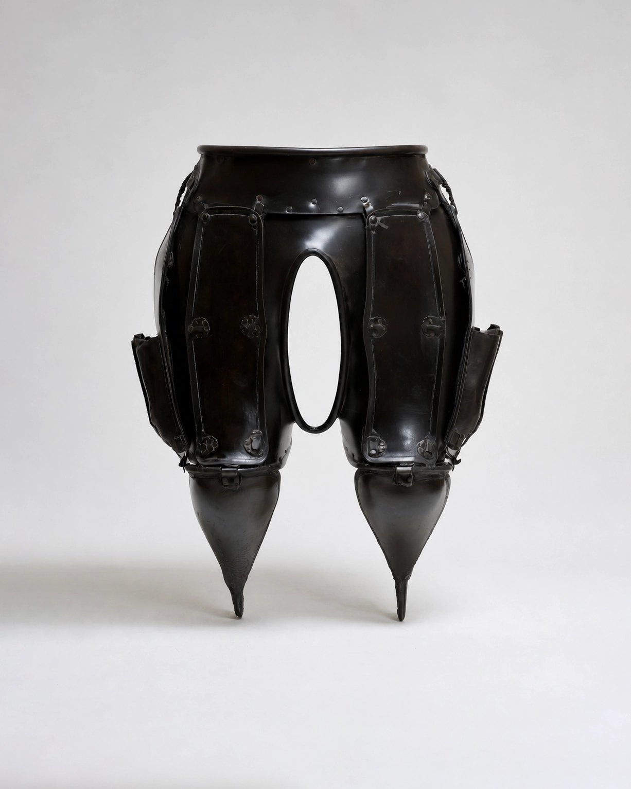

No.02 Variable Assistive Devices
Body Pocket Frame, 2047
협소한 주거 환경에서도 개인의 소지품과 취미 물품을 포기하지 않기 위해 개발된 착용형 수납 장치이다. 장치는 몸통과 허리, 허벅지를 따라 다층 구조의 포켓과 프레임을 형성하며, 사용자는 다양한 크기의 물품을 신체와 함께 휴대하고 보관한다. 별도의 수납장을 사용하는 대신, 신체 자체가 개인 수납 공간으로 기능하도록 설계되었다.
- 크기/무게
- W: 55, H: 72(cm) / 12(kg)
- 재질
- 흑색 도장 강철, 알루미늄, 가죽 패드, 금속 리벳·힌지
- 사용 목적
- 별도의 수납장을 줄이고, 확보된 공간을 생활 공간으로 활용하기 위해 사용
- 유도 자세
-
몸통을 곧게 세운 자세
골반 중심으로 하중을 분산
상체를 안정적으로 유지한 보행
물품의 무게에 맞춰 균형을 유지하는 자세 - 추정 환경
- 수납장을 둘 수 없는 초소형 원룸 및 협소주택
- 추정 사용
- 사용자는 생활용품과 개인 소장품을 신체에 분산 수납한 채 장시간 생활했던 것으로 추정된다. 포켓의 크기가 서로 다른 것으로 보아 물품의 용도에 따라 수납 위치를 구분하여 사용했던 것으로 보인다.
* 이미지에 마우스를 올려보세요.